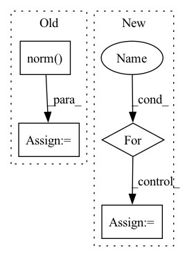

Pattern ID :351
Before Change
// Confidence Loss(cosine distance to classes center)
// pos [num, num_priors]
// conf_data [num, num_priors, feature_dim]
conf_data = conf_data / torch.norm( conf_data, dim=2, keepdim=True) // [num, num_priors, feature_dim]
batch_conf = conf_data.view(-1, self.num_classes).mm(self.imprinted_matrix.t()) * self.scale // [n_way, num_classes]
// Compute max conf across batch for hard negative mining (logit-combined)After Change
// pos [num, num_priors]
// conf_data [num, num_priors, feature_dim]
features = [conf_data.view(-1, self.num_classes)]
for i in range(3):
new_features = (self.denselayer1, self.denselayer2, self.denselayer3)[i](*features)
features.append(new_features)
batch_conf = new_features * self.scale // [n_way, num_classes]
In pattern: SUPERPATTERN
Frequency: 3
Non-data size: 4
Instances Fragment ID: 2169153
Project Name: ze-yang/context-transformer
Commit Name: fdad2f0570a1a57d0925ef2ff8b6a15611f910b5
Time: 2019-03-08
Author: 981435961@qq.com
File Name: layers/modules/multibox_loss_combined_imprinted.py
M Class Name: MultiBoxLoss_combined
N Class Name: MultiBoxLoss_combined
M Method Name: forward(4)
N Method Name: forward(4)
M Parent Class: nn.Module
N Parent Class: nn.Module
M File Name: layers/modules/multibox_loss_combined_imprinted.py
N File Name: layers/modules/multibox_loss_combined_imprinted.py
M Start Line: 71
M End Line: 107
N Start Line: 108
N End Line: 112
Before Change
// mask keypoints with cls and detection range
// mask = torch.norm(point_coords[:, :2], dim=1) < 57.6
mask = torch.logical_and(point_cls==4, torch.norm( point_coords[:, :2], dim=1) < 57.6)
xyz = point_coords[mask]
xyz_batch_cnt = xyz.new_zeros(batch_size).int()After Change
xyz = torch.cat(point_coords, dim=0)
xyz_batch_cnt = xyz.new_zeros(batch_size).int()
for bs_idx in range(batch_size):
xyz_batch_cnt[bs_idx] = len(point_coords[bs_idx])
new_xyz = global_roi_grid_points.view(-1, 3)
new_xyz_batch_cnt = xyz.new_zeros(batch_size).int()
for bs_idx in range(batch_size): Fragment ID: 2169152
Project Name: derrickxunu/opencood
Commit Name: c7ecf237666697c93ad84b5d271c16e133ac8ccb
Time: 2022-04-01
Author: yunshuang.yuan@ikg.uni-hannover.de
File Name: opencood/models/sub_modules/roi_head.py
M Class Name: RoIHead
N Class Name: RoIHead
M Method Name: roi_grid_pool(2)
N Method Name: roi_grid_pool(2)
M Parent Class: nn.Module
N Parent Class: nn.Module
M File Name: opencood/models/sub_modules/roi_head.py
N File Name: opencood/models/sub_modules/roi_head.py
M Start Line: 164
M End Line: 184
N Start Line: 188
N End Line: 208
Before Change
total_norm += param_norm**norm_type
else:
try:
param_norm = float(torch.norm( p, norm_type, dtype=torch.float32) )
except TypeError as err:
param_norm = float(torch.norm(p.float(), norm_type))
//param_norm = p.data.float().norm(norm_type)After Change
else:
total_norm = 0.
tensor_mp_rank = bwc_tensor_model_parallel_rank(mpu=mpu)
for p in parameters:
// Pipeline parallelism may replicate parameters. Avoid multi-counting.
if hasattr(p, "ds_pipe_replicated") and p.ds_pipe_replicated:
continue
// Filter to avoid over-counting replicated tensors from tensor
// model parallelism
if (tensor_mp_rank > 0) and not is_model_parallel_parameter(p):
continue
param_norm = p.data.float().norm(norm_type)
total_norm += param_norm**norm_type
// Sum across all model parallel GPUs. Fragment ID: 2169155
Project Name: microsoft/deepspeed
Commit Name: e2fdd254edff5780d00c04111572c913ee698719
Time: 2021-09-29
Author: jerasley@microsoft.com
File Name: deepspeed/runtime/utils.py
M Class Name: AnonimousClass
N Class Name: AnonimousClass
M Method Name: get_weight_norm(3)
N Method Name: get_weight_norm(3)
M Parent Class:
N Parent Class:
M File Name: deepspeed/runtime/utils.py
N File Name: deepspeed/runtime/utils.py
M Start Line: 403
M End Line: 437
N Start Line: 500
N End Line: 529